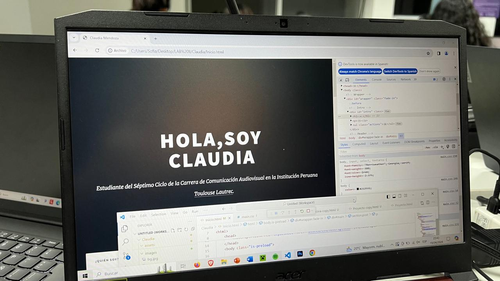
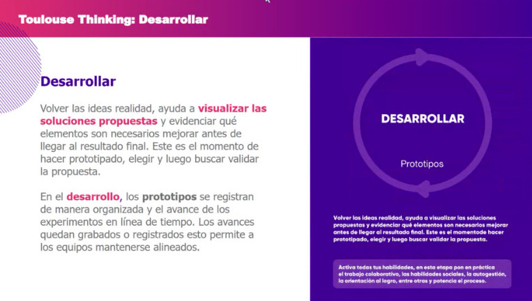
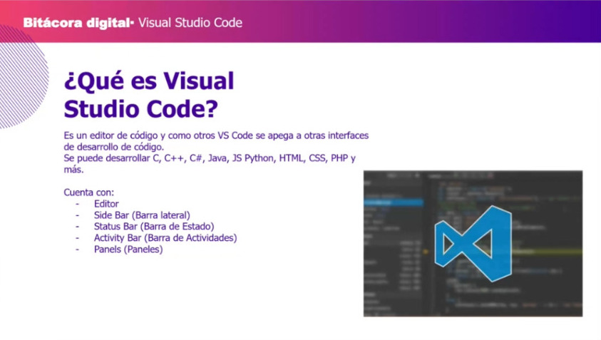
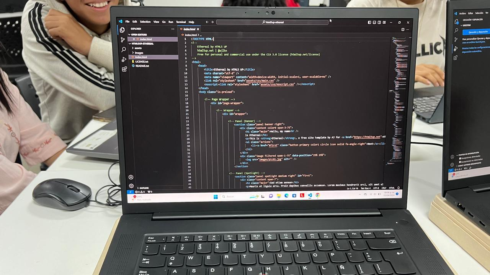

Julio 06, 2024
En esta bitácora, documentaremos nuestras experiencias y reflexiones durante las sesiones del curso Laboratorio de Innovación 2. Cada entrada será un testimonio de nuestro crecimiento y aprendizaje en este apasionante viaje hacia la innovación.
¡Bienvenidos a esta travesía de descubrimiento y desarrollo!


En esta clase, conocemos las métricas para nuestra presentación de segundo trimestre, detallando las métricas de evaluación. Realizamos un ejercicio grupal utilizando componentes electrónicos, para luego continuar en el desarrollo de nuestro proyecto.

Aprendemos el protocolo de validación, utilizando ejemplos de otros proyectos para ilustrar el concepto. Contando con plantillas específicas, cada grupo pudo trabajar en sus proyectos respectivos. Luego, en salas separadas trabajamos esta actividad.

Repasamos el concepto de fabricación e impresión 3D, sin embargo ahora vemos la variabilidad que puede haber en el proceso. Incluimos el término "Ingeniería Inversa" en el escaneo 3D, cuales con los objetivos de este último y los dispositivos que se pueden usar.

Presentación final del segundo trimestre. Cada grupo expone y presenta el prototipo en 3D de su proyecto. Nuestro grupo, "RIEGOTECH", recibió felicitaciones por parte del jurado como del profesor, recibimos feedback que será adaptado para la presentación final.

En esta sesión, se priorizó el avance de los proyectos. Por temas técnicos en la plataforma Moodle, la clase se vio interrumpida. En Microsoft Teams avanzamos con el feedback de la exposición final anterior, por temas de tiempo, el feedback fue enviado por correo electrónico.

Hablamos en clase sobre las experiencias de realidad aumentada (AR), usando la tecnología llamada "MY WEB AR". Aplicamos lo aprendido a nuestros proyectos oficiales, en nuestro caso, a nuestro prototipo "RIEGOTECH". Y observamos las ventajas de la realidad aumentada para nuestro diseño.